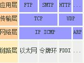

问题
- A如何知道，哪个设备是路由器？
- 在 A 上要设置默认网关
- 上一步 A 通过是否与 C 在同一个子网内，判断出自己应该把包发给路由器，那路由器的 IP 是多少呢？其实说发给路由器不准确，应该说 A 会把包发给默认网关。对 A 来说，A 只能直接把包发给同处于一个子网下的某个 IP 上，所以发给路由器还是发给某个电脑，对 A 来说也不关心，只要这个设备有个 IP 地址就行。所以默认网关，就是 A 在自己电脑里配置的一个 IP 地址，以便在发给不同子网的机器时，发给这个 IP 地址。
- 路由器如何知道C在哪？
- 现在A要给C发数据包，已经可以成功发到路由器这里了
- 路由器收到的数据包有目的IP也就是C的IP地址，需要转化成从自己的哪个端口出去，即路由表。
- 刚才说的都是 IP 层，但发送数据包的数据链路层需要知道 MAC 地址，可是我只知道 IP 地址该怎么办呢？
- arp,在网络层，我需要把 IP 地址对应的 MAC 地址找到，也就是通过某种方式，找到 192.168.0.2 对应的 MAC 地址 BBBB。
- 这种方式就是 arp 协议，同时电脑 A 和 B 里面也会有一张 arp 缓存表，表中记录着 IP 与 MAC 地址的对应关系。
- 一开始的时候这个表是空的，电脑 A 为了知道电脑 B（192.168.0.2）的 MAC 地址，将会广播一条 arp 请求，B 收到请求后，带上自己的 MAC 地址给 A 一个响应。此时 A 便更新了自己的 arp 表。
- 这样通过大家不断广播 arp 请求，最终所有电脑里面都将 arp 缓存表更新完整。
总结规则
电脑视角:
- 首先我要知道我的 IP 以及对方的 IP
- 通过子网掩码判断我们是否在同一个子网
- 在同一个子网就通过arp获取对方mac地址直接发出去
- 不在同一个子网就通过arp获取默认网关的mac地址直接发出去
交换机视角
- 我收到的数据包必须有目标 MAC 地址
- 通过 MAC 地址表查映射关系
- 查到了就按照映射关系从我的指定端口发出去
- 查不到就所有端口都发出去
路由器视角
- 我收到的数据包必须有目标 IP 地址
- 通过路由表查映射关系
- 查到了就按照映射关系从我的指定端口发出去（不在任何一个子网范围，走其路由器的默认网关也是查到了）
- 查不到则返回一个路由不可达的数据包
网络层（IP协议）本身没有传输包的功能，包的实际传输是委托给数据链路层（以太网中的交换机）来实现的。
涉及到的三张表分别是
- 交换机中有 MAC 地址表用于映射 MAC 地址和它的端口
- 路由器中有路由表用于映射 IP 地址(段)和它的端口
- 电脑和路由器中都有 arp 缓存表用于缓存 IP 和 MAC 地址的映射关系
这三张表是怎么来的
MAC 地址表是通过以太网内各节点之间不断通过交换机通信，不断完善起来的。
路由表是各种路由算法 + 人工配置逐步完善起来的。
arp 缓存表是不断通过 arp 协议的请求逐步完善起来的。
以太网
- 互联网Internet，广域网WAN，局域网LAN 等是范围和区域的概念。
- 以太网Ethernet 、ATM网、FDDI网是技术实现的概念。
- 按照传输技术来分类，属于OSI参考类型的数据链路层。
- 电脑上的以太网接口，WI-FI接口，以太网交换机、路由器上的千兆，万兆以太网口，还有网线，都是以太网的组成部分，以太网可以用在局域网、广域网、也可以用在互联网上。
- 按照传输技术来分类，属于OSI参考类型的数据链路层。
- 以太网Ethernet 、ATM网、FDDI网可以算作一类，按照传输技术来分类，属于OSI参考类型的数据链路层。
- 以太网只是组成互联网的一个子集，以太网是现在主流的局域网标准，而互联网是指将大量的局域网连接起来，进行资源的分享。
 - 以太网采用的CSMA/CD（载波侦听多路访问/冲突检测）的控制技术。他主要定义了物理层和数据链路层的工作方式。数据链路层和物理层各自实现自己的功能，相互之间不关心对方如何操作。二者之间有标准的接口(例如MII，GMII等)来传递数据和控制。
网卡
网卡工作在物理层和数据链路层的MAC子层。
网卡本身是局域网的设备，通过网关、路由器等设备就可以把这个局域网挂接到Internet上。
网卡有很多种
- 数据链路层控制：
- 以太网卡，令牌环网卡，ATM网卡
- 物理层
- 无线网卡，RJ-45网卡，同轴电缆网卡，光线网卡
- 数据链路层控制：
以太网卡的物理层可以包含很多种技术，常见的有RJ45，光纤，无线等，它们的区别在于传送信号的物理介质和媒质不同。这些都在IEEE的802协议族中有详细的定义。
二层网络/三层网络
- 二层网络仅仅通过MAC寻址即可实现通讯，但仅仅是同一个冲突域内；
- 三层网络需要通过IP路由实现跨网段的通讯，可以跨多个冲突域；
- 二层设备以三层设备的区别是看能不能识别三层的东西，比如IP地址、路由、ARP等三层的东西。能识别的就为三层设备。三层设备常用于多网段，隔离广播域。
- 二层设备一般为交换机，三层设备一般为路由器。
传统网络架构
通常将网络中直接面向用户连接或访问网络的部分称为接入层，将位于接入层和核心层之间的部分称为分布层或汇聚层，接入层目的是允许终端用户连接到网络，因此接入层交换机具有低成本和高端口密度特性！
比如说一个大学，其用户数至少几千人，其网络机房中的网络设备，如核心交换机、路由器、防火墙等设备共同组成的区域可以看做是核心层，每个楼层中的交换机等设备可以看做是接入层，而连接接入层和核心层之间的区域就是汇聚层。
- 汇聚 接入到核心的交换机 就是 汇聚层
接入层
- 为多业务应用和其他的网络应用提供用户到网络的接入！
- 接入交换机通常位于机架顶部，被称为TOR（top of rack）交换机，物理连接服务器
- 接入层是最终用户(如：教师、学生) 与网络的接口，提供着即插即用的特性，同时易于使用和维护（注意考虑端口密度）。
- 接入层为用户提供了在本地网段访问应用系统的能力，主要解决相邻用户之间的互访需求，并且为这些访问提供足够的带宽，接入层还应当适当负责一些用户管理功能（如地址认证、用户认证、计费管理等），以及用户信息收集工作（如用户的IP地址、MAC地址、访问日志等）。
汇聚层
提供基于策略的连接
将位于接入层和核心层之间的部分称为分布层或汇聚层，汇聚层交换层是多台接入层交换机的汇聚点，它必须能够处理来自接入层设备的所有通信量，并提供到核心层的上行链路，因此汇聚层交换机与接入层交换机比较，需要更高的性能，更少的接口和更高的交换速率。
汇聚层主要承担的基本功能有：
- 汇接接入层的用户流量，进行数据分组传输的汇聚、转发和交换；
- 根据接入层的用户流量，进行本地路由、过滤、流量均衡、QoS优先级管理，以及安全机制，IP地址转换、流量整形、组播管理等处理；
- 根据处理结果将用户流量转发到核心交换层或在本地进行路由处理；
- 完成各种协议的转换（如路由的汇总和重新发布等），以保证核心层连接运行不同的协议的区域。
核心层
- 提供最优的区间传输
- 核心层的功能主要是实现骨干网络之间的优化传输，骨干层设计任务的重点通常是冗余能力、可靠性和高速的传输。网络的控制功能最好尽量的少在骨干层上实施。
- 核心层一直被认为是所有流量的最终承受者和汇聚者，所以对核心层的设计以及网络设备的要求十分严格，核心层设备占网络投资的主要部分。
传统网络的弊端
带宽的浪费：为了防止环路，汇聚层和接入层之间通常会运行STP协议，使得接入交换机的上联链路中实际承载流量的只有一条，而其他上行链路将被阻塞（如图中虚线所示），造成了带宽的浪费；
1
2
3
4
5环路的影响
1. 数据包无限循环： 在一个有回路的网络中，数据包可能会在网络中来回传递，造成数据包无限循环，占用带宽和资源，最终导致网络堵塞。
2. 广播风暴： 如果有回路存在，广播消息可能会在网络中无限传播，导致大量的冗余流量，降低网络性能。
3. 数据包丢失： 数据包在回路中循环时，可能会因为循环次数过多而丢失，导致数据不可达目的地。
4. 网络稳定性下降： 回路可能导致网络拓扑不稳定，增加网络管理和故障排除的复杂性，降低整体网络稳定性。故障域较大：STP协议由于其本身的算法，在网络拓扑发生变更时需要重新收敛，容易发生故障，从而影响整个VLAN的网络；
难以适应超大规模网络：在云计算领域，网络规模扩大，数据中心也分布在不同的地理位置，虚拟机要求能在任意地点创建，迁移，而保持其网络属性（IP, 网关等）保持不变，需要支持大二层网络，在上图的拓扑中，无法在VLAN10和VLAN20之间作上述迁移；
转载请注明来源，欢迎对文章中的引用来源进行考证，欢迎指出任何有错误或不够清晰的表达。可以在下面评论区评论，也可以邮件至 1065016533@qq.com